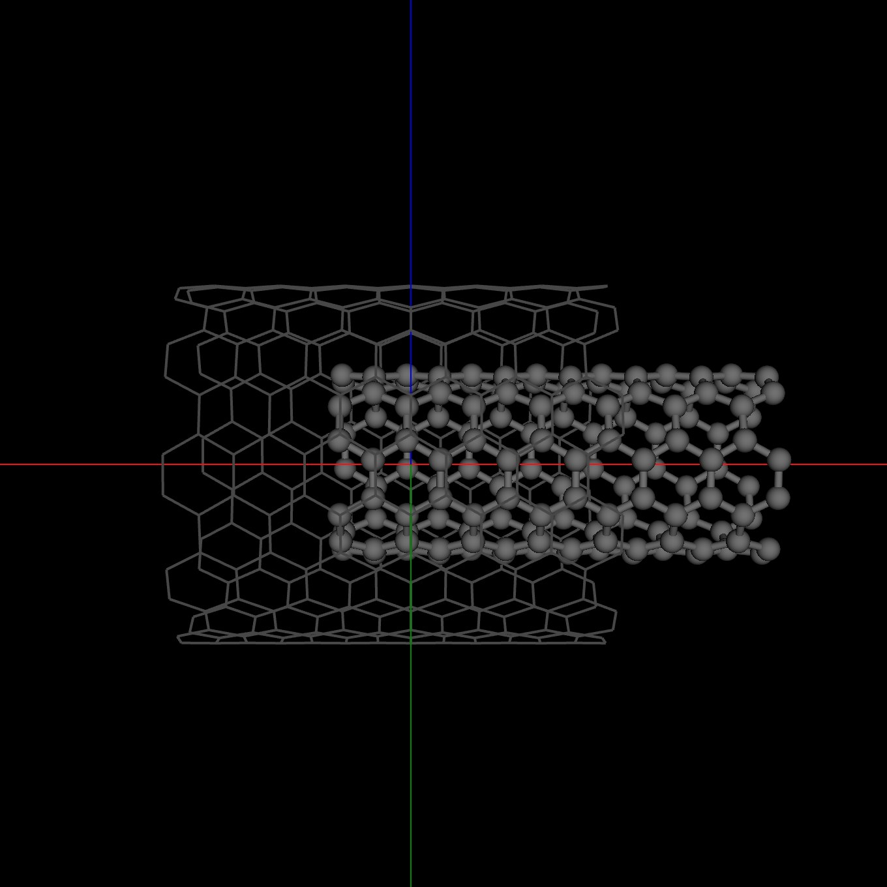
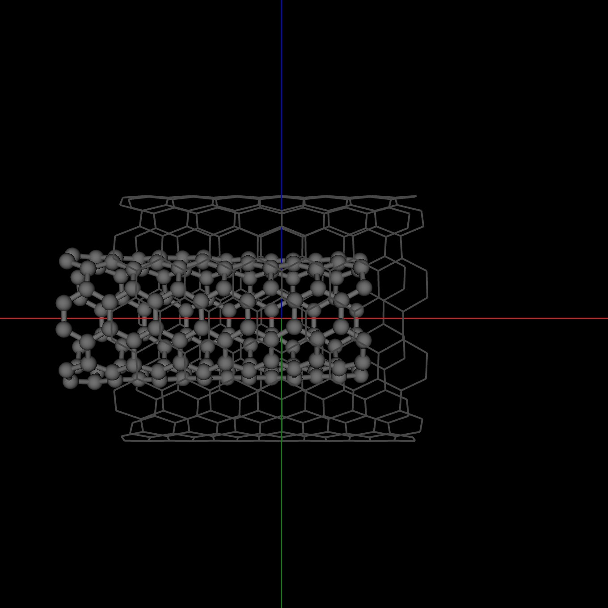
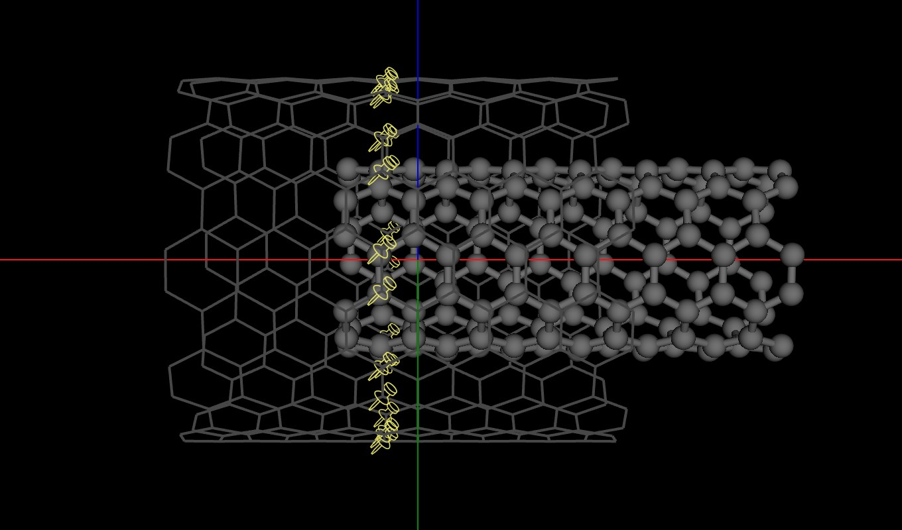
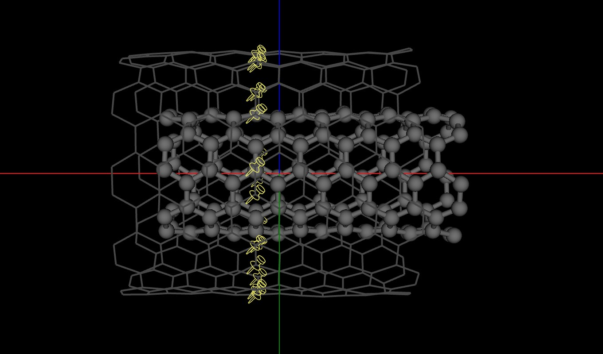
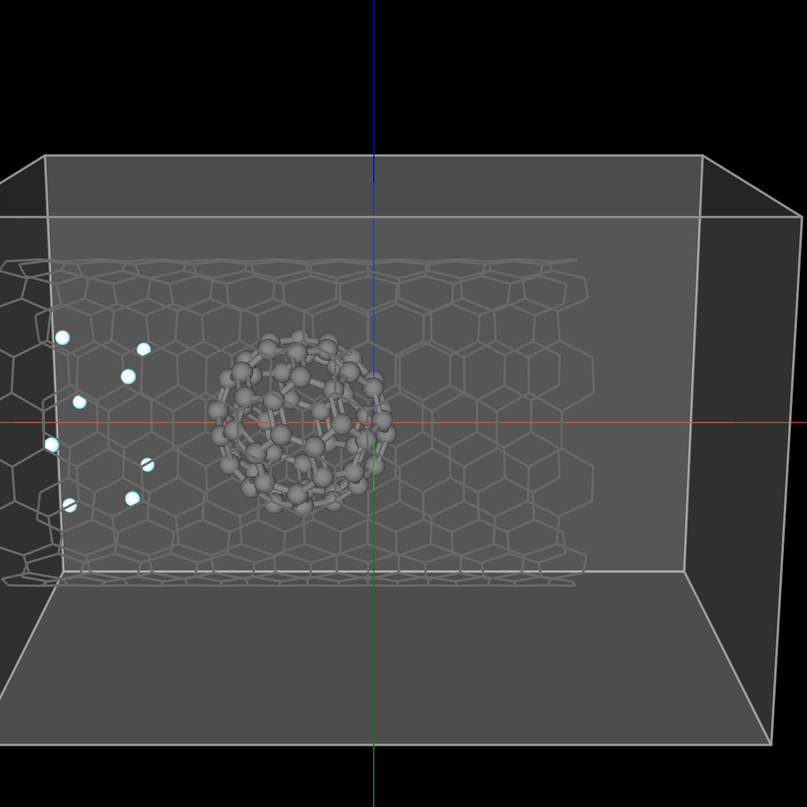
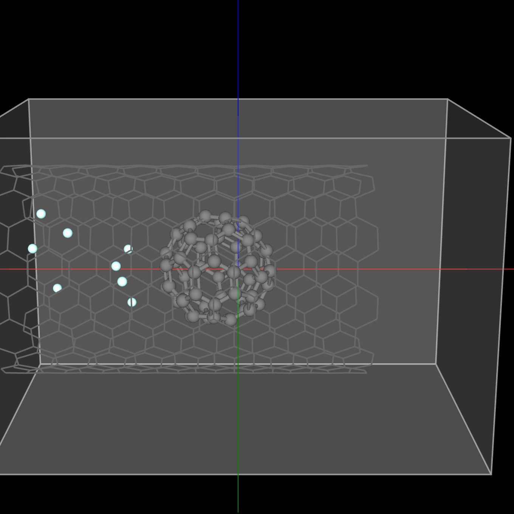
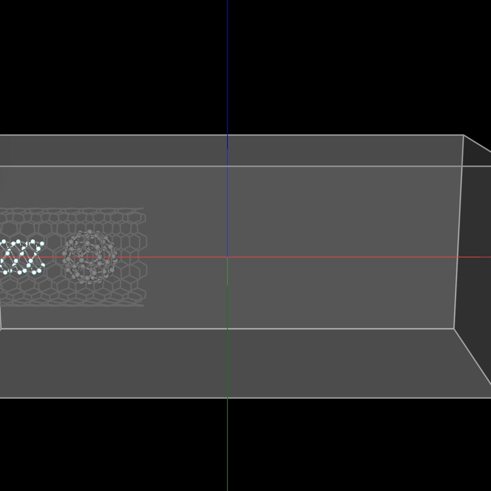
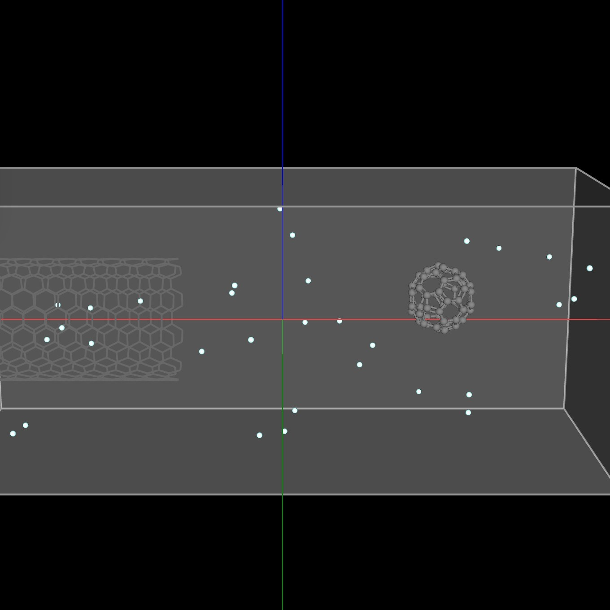
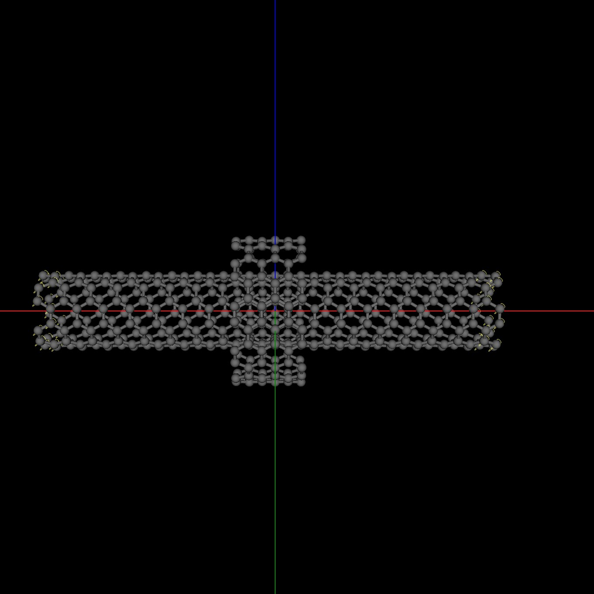
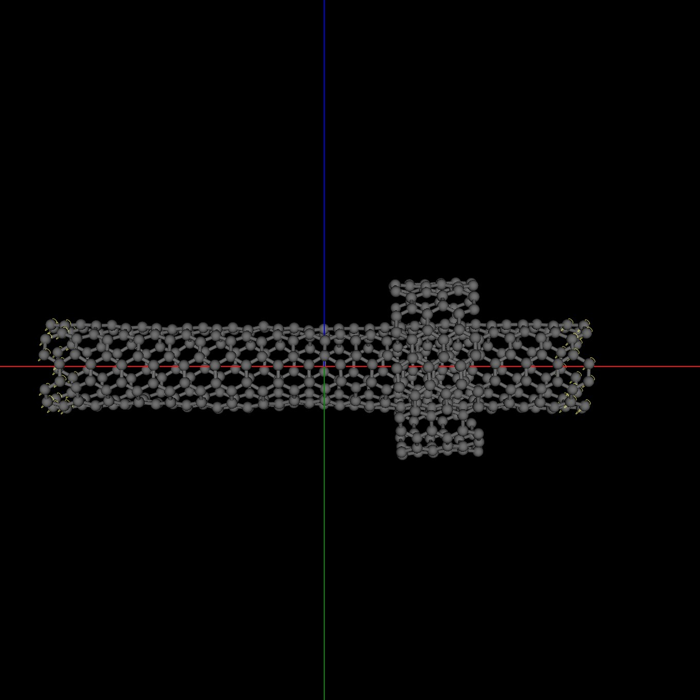

Nanotube Machines: Bearings, Oscillators, Pistons, and Motors
Simulations in AIMS show one nanotube sliding inside another, the same sliding running down in a flexible tube, a gas pushing a piston and firing it from a nozzle, and a flow of heat driving a motor, and an AI agent measures each motion.
A carbon nanotube is a sheet of carbon atoms rolled into a tube, and graphene is the flat sheet. The wall of a nanotube is smooth on the scale of atoms, and no chemical bond joins one wall to the next, so one nanotube slides on another with very little friction. AIMS models every atom of such a part, and an AI agent sets up the experiments. A student asks a plain-language question, and the agent builds the parts, runs them, measures the motion, and posts the measured data in the chat. This article follows five machines made of carbon nanotubes: a bearing, one nanotube that slides and turns inside another; an oscillator, the same pair with a flexible outer tube, whose swing runs down; a piston, a buckyball that a gas pushes along a nanotube; a nozzle, the same tube with enough hot gas to fire the ball out; and a motor, a short nanotube that a flow of heat moves along a longer one. It is the third of three articles. The article on molecular machines follows a shuttle, a clamp, an ion pump, and tweezers, and it describes the forces in the model and how to open an example and type a prompt. The article on molecular rotors and gears follows parts that turn. The companion article on superlubricity slides a flat flake of graphene on graphene. No atom of the parts in this article carries a charge, and the Lennard-Jones force is the one force between them.
A Bearing Made of Two Nanotubes
A multiwall carbon nanotube is a set of nanotubes one inside another. The walls are 3.4 Å apart, the spacing of the layers of graphite, and no chemical bond joins one wall to the next. In 2000 Cumings and Zettl pulled the inner walls of a multiwall nanotube out of the outer walls inside an electron microscope. The inner walls slid back when released, and the nanotube showed no wear after many cycles. Zheng and Jiang calculated in 2002 that an inner tube released in this way oscillates more than a billion times per second. In 2003 Fennimore and coworkers built a motor whose rotor turns on a multiwall nanotube.
The window below holds a (10,10) nanotube of 280 carbon atoms, 16 Å long and 13.6 Å across, with every atom fixed in place, drawn as a wireframe. A (5,5) nanotube of 140 carbon atoms, 6.8 Å across, lies on the same axis and is free to move. The two numbers in the name of a nanotube describe how the sheet of carbon atoms is rolled, and a larger pair of numbers means a wider nanotube. The inner tube starts with its right end 6 Å outside the outer tube. The thermostat of the lab is off, so the total energy stays constant. Press Play and watch the inner tube.
A (5,5) nanotube inside a fixed (10,10) nanotube, drawn as a wireframe. The inner tube passes through the outer tube and returns every 6.7 ps of simulated time.
Open A Nanotube Bearing from the list of examples (Nanotechnology, Molecular Machines). Examples belong to their author, so sign in and save your own copy with Save Project As in the Project menu. Then open the chat and type the prompts below. The answer to the third prompt in the example keeps its last frame: press "Load this state" on its card and the lab continues from 100 ps.
- Oscillation — “Run it for 30 ps and chart the distance from the left end of the outer tube to the left end of the inner tube.”
- Fit — “Which inner tube makes a good bearing? Compare (4,4), (5,5) and (6,6) tubes inside the (10,10) tube.”
- Friction — “Run it for another 70 ps. Do the sliding and the turning slow down?”
The Inner Tube Slides and Turns
The agent ran the lab for 30 ps. The outer tube pulled the inner tube in. The inner tube passed through, came out 6.0 Å at the left end, stopped, and moved back. It turned around eight times in 30 ps. One round trip took 6.7 ps, a frequency of about 150 gigahertz, and the top speed was about 640 m/s. The center of the inner tube stayed within 0.05 Å of the axis.
The inner tube also turned about its axis: 380° in 30 ps, at about 13° per picosecond throughout. The atoms start with random velocities at 300 K, and these gave the inner tube a small spin. The outer wall did not stop the spin. The total energy changed by 0.002 eV during the run. The thermometer of the lab moved between about 130 K and 350 K, because the thermometer counts the kinetic energy of the sliding of the whole tube together with the vibrations of its atoms.
Which Inner Tube Makes a Bearing?
The second prompt compares three inner tubes in the same outer tube. For each one, the agent adds up the Lennard-Jones energy between the two tubes, moves the inner tube along the axis to find the force that pulls it back, turns it and slides it to find the energy barriers, and runs it free for 10 ps from the middle of the outer tube.
| Inner tube | Gap between walls | Force pulling it in | Barrier to turning | Barrier to sliding | Free run |
|---|---|---|---|---|---|
| (4,4) | 4.1 Å | 960 pN | 0.0 meV | 18 meV | stayed inside, 0.3 Å from the axis |
| (5,5) | 3.4 Å | 1,470 pN | 9 meV | 27 meV | stayed inside, on the axis |
| (6,6) | 2.7 Å | pushed out | 47 meV | 335 meV | left the outer tube after 1.9 ps |
Three inner tubes in a (10,10) outer tube. The barriers are energies for the whole inner tube. The thermal energy at 300 K is 26 meV.
The (5,5) tube leaves a gap of 3.4 Å, the distance at which two layers of carbon atoms rest, and the outer tube pulls it in with the largest force, about 1,470 pN. The force is nearly the same at every position while part of the inner tube is outside, because each ångström of the inner tube that leaves removes the same area of contact between the walls. The (4,4) tube is narrower than the space, the force is weaker, and the tube moved 0.3 Å from the axis toward one side of the wall. The (6,6) tube leaves 2.7 Å, the walls overlap, and the outer tube pushed it out in 1.9 ps.
Turning the whole (5,5) tube past the atoms of the outer wall costs 9 meV, and sliding it costs 27 meV. The thermal energy at 300 K is 26 meV, so the thermal motion of the tube is enough to turn it and to slide it. A bearing needs the two properties in the (5,5) row: a wall that holds the shaft on the axis, and small barriers to motion. The forces and energies are rough. The Universal Force Field of this lab gives two carbon atoms an attraction about twice as strong as the attraction fitted to graphite.
After 100 Picoseconds
The third prompt continues the first run to 100 ps. Over the last 30 ps one round trip took 6.7 ps and the inner tube came out 6.1 Å at each end, against 6.7 ps and 6.0 Å over the first 30 ps. The inner tube turned at 16° per picosecond over the last 30 ps, against 13° per picosecond over the first 30 ps, and made 3.9 full turns in the 100 ps. The total energy changed by 0.002 eV. The sliding and the turning lost no measurable energy to friction in 100 ps. The outer tube of this lab is rigid. A real outer wall vibrates and takes energy from the inner tube, so the oscillation of a real nanotube decays. The next example gives the outer tube that freedom.


The (5,5) nanotube with its right end outside the (10,10) nanotube at the start (left), and the same nanotube at the left end a few picoseconds after Play (right).
An Oscillator That Runs Down
The inner tube of the bearing swings through the outer tube and back, and that motion is itself a proposed device. Zheng and Jiang suggested in 2002 that a nanotube sliding in and out of another could serve as an oscillator at gigahertz frequencies, and Legoas and coworkers simulated one in 2003. The pull that draws the inner tube back in has been measured. No experiment has yet watched the inner tube go back and forth, so the oscillator is a proposal.
The window below holds the same two nanotubes as the bearing, with one change. The outer tube is flexible: the 20 atoms of the ring at its middle are fixed, which holds the tube in place, and the other 260 atoms are free to vibrate. The lab marks the fixed atoms with pins. The inner tube starts 6 Å out of the right end, and the thermostat is off. Press Play and watch how far the inner tube comes out at each end.
A (5,5) nanotube inside a flexible (10,10) nanotube, drawn as a wireframe. The pins mark the fixed ring of the outer tube. Each swing of the inner tube is a little shorter than the one before.
Open A Nanotube Oscillator from the list of examples (Nanotechnology, Molecular Machines). Examples belong to their author, so sign in and save your own copy with Save Project As in the Project menu. Then open the chat and type the prompts below. The answer to the first prompt in the example keeps its last frame: press "Load this state" on its card and the lab continues from 100 ps.
- Oscillation — “Run it for 100 ps and chart the position of the inner tube along the axis.”
- Friction — “Why does the swing shrink? Compare a rigid outer tube, and a colder and a hotter start.”
- Timing — “Does a round trip take the same time if I pull the tube out less or more? Try 3, 6, 9 and 12 Å.”
The agent ran the lab for 100 ps. The inner tube turned around 30 times. One round trip took 6.7 ps at the start, a frequency of about 150 gigahertz, the same as in the bearing. Over the first 15 ps the inner tube came out 6.0 Å at each end. Over the last 15 ps it came out 5.3 Å. The energy of the sliding depends on how far the tube comes out, and 82% of it was left after 100 ps. The total energy changed by 0.005 eV, so the rest of the energy was still in the tubes: it had passed into the vibrations of the atoms of the two walls. That transfer is the friction of the oscillator.


The two nanotubes at the start (left) and after 100 ps, loaded by the "Load this state" card (right). The pins mark the fixed ring of the outer tube. After 100 ps the outer wall is slightly out of shape, because its atoms are vibrating.
Where the Energy Goes
The second prompt runs four cases for 100 ps each, all with the inner tube pulled 6 Å out. In the first the outer tube is rigid, as in the bearing. In the other three it is flexible, and the atoms start with the speeds of 100 K, 300 K, and 600 K.
| Outer tube | Temperature during the run | Swing, first 15 ps | Swing, last 15 ps | Sliding energy left |
|---|---|---|---|---|
| Rigid | 230 K | 6.0 Å | 5.9 Å | 97% |
| Flexible | 80 K | 6.0 Å | 5.8 Å | 94% |
| Flexible | 180 K | 6.0 Å | 5.3 Å | 82% |
| Flexible | 330 K | 5.7 Å | 4.4 Å | 62% |
How far the inner tube comes out at each end, at the start and at the end of a run of 100 ps. The highlighted row is the lab as it opens. The temperature of the rigid row is that of the inner tube alone.
With a rigid outer tube the swing kept its size. A rigid wall cannot take up energy, and the vibrations of the inner tube took almost none. With a flexible outer tube the swing shrank, and it shrank faster in the hotter tubes: to 5.8 Å at 80 K, 5.3 Å at 180 K, and 4.4 Å at 330 K. A likely reason is that the atoms of a hot wall move farther from their places, so the inner tube meets a rougher wall. These runs do not test that reason. Each row is one run, and a run with other starting speeds gives somewhat different numbers. The thermometer reads lower than the starting speeds because part of that energy goes into the stretching of the bonds soon after the start.
A Longer Pull Takes Longer
The third prompt pulls the inner tube out by four different lengths and times the round trip, with a rigid outer tube so that the swing keeps its size. For the calculated column, the agent moves the inner tube along the axis without running it, adds up the energy between the two tubes at each position, and calculates how long a tube of this mass takes to travel that energy curve.
| Pulled out | Round trip, measured | Frequency | Round trip, calculated | Force pulling it in |
|---|---|---|---|---|
| 3 Å | 5.5 ps | 180 GHz | 5.3 ps | 1,090 pN |
| 6 Å | 6.7 ps | 150 GHz | 6.3 ps | 1,420 pN |
| 9 Å | 8.0 ps | 130 GHz | 7.5 ps | 1,470 pN |
| 12 Å | 9.2 ps | 110 GHz | 8.7 ps | 1,440 pN |
The time of one round trip of the inner tube for four starting positions, measured in a run of 30 ps and calculated from the energy between the two tubes.
The round trip takes 5.5 ps from 3 Å and 9.2 ps from 12 Å. The calculated times are within 7% of the measured ones, and all of them are a little shorter. A weight on a spring takes the same time for every round trip, large or small, because a spring pulls back harder the farther it is stretched. Here the tube was pulled out four times as far and the force grew 1.3 times. Each ångström of the inner tube that leaves the outer tube removes the same area of contact between the walls, so the force changes little with the distance. A tube that starts farther out has farther to go under nearly the same force. This is also why the round trip in the first run became shorter, from 6.7 ps to 6.4 ps, as the swing shrank. The frequency of this oscillator changes as it runs down.
A Piston Driven by a Gas
A piston is a part that closes a cylinder and slides in it. A gas on one side pushes the piston, and the piston carries the push to the rest of the machine. A car engine and a steam engine work this way. A buckyball fits a (10,10) nanotube closely. The gap between the ball and the wall is 3.2 Å, too narrow for an atom to pass, so the ball can serve as a piston and the nanotube as its cylinder.
The window below holds a (10,10) nanotube of 400 carbon atoms, 23 Å long, fixed in place and drawn as a wireframe. Its left end sits on the left wall of the box, and the wall closes that end. A buckyball inside the tube has its center 12 Å from the wall, and eight helium atoms fill the space between the wall and the ball. The thermostat is off, so the total energy stays constant. The atoms start with the velocities of 300 K. Press Play and watch the ball.
A buckyball in a nanotube whose left end is closed by the wall of the box, with eight helium atoms behind the ball. The gas pushes the ball toward the open end, and the ball returns and compresses the gas every 13 ps of simulated time.
Open A Gas-Driven Piston from the list of examples (Nanotechnology, Molecular Machines). Examples belong to their author, so sign in and save your own copy with Save Project As in the Project menu. Then open the chat and type the prompts below. The answer to the first prompt in the example keeps its last frame: press "Load this state" on its card and the lab continues from 24 ps.
- Push — “Run it for 24 ps and chart the distance from the closed end to the ball. What does the gas do to the ball, and what happens to the gas?”
- Amount — “What does the number of gas atoms change? Try no gas, and 4, 8 and 12 helium atoms at 300 K.”
- Temperature — “What does the temperature of the gas change? Try 100 K, 300 K and 600 K with 8 helium atoms.”
The Gas Pushes the Ball and Cools
The helium atoms struck the ball and pushed it along the tube. The center of the ball moved from 12 Å to 19 Å from the wall in 6 ps and reached a top speed of about 170 m/s. Over the first 3 Å the average force on the ball was about 60 pN. For a tube 13.6 Å across, that force is a pressure of roughly 430 atmospheres.
The gas cooled as it expanded. The helium atoms started near 320 K and were near 170 K when the ball was farthest out. A helium atom that strikes a ball moving away from it bounces back more slowly than it came, so each strike gives energy to the ball. At its top speed the ball carried 0.11 eV of kinetic energy along the tube, and the gas had lost 0.15 eV of kinetic energy. The gas did work on the piston. A gas that expands and does work with no heat coming in cools, and the process is called adiabatic expansion.
The ball did not leave the tube. Near the open end the attraction of the wall holds the ball back, and the ball turned around 5 Å inside the mouth. It came back to 12 Å from the wall at 13 ps and compressed the gas, which warmed up to about 250 K. The gas pushed the ball out again, and one round trip takes about 13 ps. The total energy changed by less than 0.001 eV in 24 ps.
More Gas and Hotter Gas
The second prompt changes the number of helium atoms, and the third changes the starting temperature. Each run starts with the ball 12 Å from the wall and lasts 12 ps.
| Gas | Time to travel 5 Å | Force over the first 3 Å | Top speed | Farthest point from the wall | Gas temperature, start to farthest point |
|---|---|---|---|---|---|
| No gas300 K | did not travel 5 Å | – | 0 m/s | 12 Å | – |
| 4 atoms300 K | did not travel 5 Å | 10 pN | 70 m/s | 17 Å | 240 to 200 K |
| 8 atoms300 K | 4.7 ps | 60 pN | 170 m/s | 19 Å | 320 to 170 K |
| 12 atoms300 K | 4.4 ps | 90 pN | 170 m/s | 19 Å | 280 to 190 K |
| 8 atoms100 K | did not travel 5 Å | 10 pN | 70 m/s | 17 Å | 80 to 60 K |
| 8 atoms600 K | 3.2 ps | 130 pN | 250 m/s | 20 Å | 510 to 310 K |
The push on the ball for different amounts of helium and different starting temperatures, one run of 12 ps each. The gas temperature is taken from the speeds of the helium atoms, at the start over the first half picosecond.
Without gas the ball stayed 12 Å from the wall. The wall of the tube attracts the ball equally on both sides, so no force pushes the ball along the tube. With gas, more atoms in the same space strike the ball more often: 12 atoms gave a force of about 90 pN, against 10 pN for 4 atoms. A hotter gas pushes harder, because its atoms move faster, strike the ball more often, and give the ball more momentum with each strike. The top speed of the ball was 250 m/s at 600 K against 70 m/s at 100 K. The gas cooled in every run.
A heat engine uses both results. It heats a gas to raise its pressure, lets the gas push a piston and cool, and compresses the cool gas at a lower cost in energy. Eight atoms are a very small sample of a gas, so the push arrives as separate strikes and each run differs in detail. The gas in this tube starts at a density close to that of liquid helium, and the tube is rigid, so the ball goes back and forth far longer than a ball in a real tube would.


The piston at the start, with eight helium atoms between the wall and the ball (left), and a few picoseconds after Play, with the ball near the open end and the gas expanded behind it (right).
A Nozzle That Fires the Ball
The piston stays in its cylinder. A gun, a rocket, and a spray can use the same push to send matter out of an opening, which is called a nozzle. The window below holds the nanotube and the buckyball of the piston with a larger and hotter charge of gas. The center of the ball is 16 Å from the wall that closes the tube, and 32 helium atoms are packed behind it in eight rings of four, 1 Å apart along the tube. The atoms start with the velocities of 1500 K, and the thermostat is off. The ball closes the tube, so the gas can leave only by pushing the ball out. Press Play and watch the ball.
A buckyball in a nanotube with 32 hot helium atoms packed behind it. The gas pushes the ball out of the open end in about 2 ps of simulated time, and the ball flies on.
Open A Nanotube Nozzle from the list of examples (Nanotechnology, Molecular Machines). Examples belong to their author, so sign in and save your own copy with Save Project As in the Project menu. Then open the chat and type the prompts below. The answer to the first prompt in the example keeps its last frame: press "Load this state" on its card and the lab shows the ball outside the tube after 6 ps.
- Shot — “Run it for 6 ps and chart the distance from the closed end to the ball. Does the gas push the ball out of the tube?”
- Temperature — “Does the shot need the high temperature? Start the same 32 helium atoms at 300 K and at 1000 K.”
- Amount — “And the amount of gas? Try 16 and 24 helium atoms at 1500 K.”
- Gas — “What does the gas do after the ball has left? Measure the helium atoms as they leave the tube in the first run.”
The Shot Needs Heat and Gas
The gas fired the ball out of the tube. The ball reached a top speed of about 780 m/s inside the tube, 1.5 ps after the start, and its whole cage was past the open end after 1.9 ps. The attraction of the wall slowed the ball as it left. The ball flew on at about 670 m/s, with a kinetic energy of 1.7 eV. The temperature of the helium fell from about 2,400 K over the first half picosecond to about 940 K over the last picosecond. The reading starts above 1500 K because the atoms begin packed closer together than they rest, and they push each other apart in the first moments.
The second and third prompts change the temperature and the number of atoms. Each run lasts 6 ps.
| Gas | Top speed of the ball | Farthest point from the wall | What the ball did | Gas temperature, first 0.5 ps to last 1 ps |
|---|---|---|---|---|
| 32 atoms300 K | 600 m/s | 24 Å | went 1 Å past the open end and was drawn back | 1,260 to 950 K |
| 32 atoms1000 K | 740 m/s | 31 Å | left the tube after 2.3 ps and stopped 7 Å past the open end | 1,900 to 810 K |
| 32 atoms1500 K | 780 m/s | 53 Å | fired: out of the tube after 1.9 ps, flying at 670 m/s | 2,400 to 940 K |
| 24 atoms1500 K | 490 m/s | 23 Å | reached the open end and was drawn back | 1,830 to 1,320 K |
| 16 atoms1500 K | 370 m/s | 21 Å | went to 2 Å from the open end and was drawn back | 1,720 to 1,110 K |
Five charges of helium behind the ball, one run of 6 ps each. The open end of the tube is 23 Å from the wall.
Only the largest and hottest charge fired the ball. The wall of the tube attracts every carbon atom of the ball, and the ball has to climb out of that attraction as it leaves. At 300 K the ball passed the open end by 1 Å and was drawn back, and at 1000 K it left the tube and stopped 7 Å past the open end. With 16 or 24 atoms at 1500 K the ball stayed in the tube and went back and forth as the piston does. A shot needs enough atoms and enough temperature together.
The fourth prompt records the velocity of each helium atom at the moment it passes the open end. During the 6 ps, 26 of the 32 atoms passed it. Their average speed along the axis of the tube was 1,650 m/s, and their average speed to the side was 1,620 m/s. For a gas that leaks out of an opening with no push behind it, the two averages are equal. The gas in this run left the tube with little more forward speed than its heat alone gives. The tube aimed the ball, and it did not form the gas into a narrow jet.
The helium atoms start packed closer than the atoms of liquid helium, and much of the energy of the shot comes from that packing. The tube is rigid, so the gas cannot heat the wall or burst it. Each row of the table is one run, and with 32 atoms another run gives different numbers.


The ball in the tube with 32 helium atoms packed behind it at the start (left), and the ball outside the tube after 6 ps, loaded by the "Load this state" card, with the helium atoms spread through the box (right).
A Motor Driven by Heat
A motor turns a supply of energy into motion in one direction. The bearing, the piston, and the nozzle above move with the energy that they were given at the start. In 2008 Barreiro, Bachtold, and coworkers built a motor from a multiwall carbon nanotube. They removed part of the outer walls so that a short piece of them was free to move along the inner walls, and they attached a small gold plate to this piece as a cargo. An electric current heated the middle of the nanotube, and the cargo moved from the hot middle toward a cooler end. The energy came from the difference in temperature along the nanotube.
The window below holds a (5,5) nanotube of 360 carbon atoms, 43 Å long, with a short (10,10) nanotube of 120 atoms around its middle, the cargo. The ring of 20 atoms at each end of the inner tube is fixed. The lab has thermostat groups, which hold chosen atoms at their own temperatures. One group holds the 40 atoms next to the left end at 800 K, and a second group holds the 40 atoms next to the right end at 100 K. No thermostat acts on the 240 atoms between them or on the cargo. All atoms start with the velocities of 450 K, and the cargo starts with no net motion. Press Play and watch the cargo.
A short (10,10) nanotube around a long (5,5) nanotube whose left end is held at 800 K and whose right end is held at 100 K. The short tube travels to the cold end in about 20 ps of simulated time.
Open A Thermal Nanotube Motor from the list of examples (Nanotechnology, Molecular Machines). Examples belong to their author, so sign in and save your own copy with Save Project As in the Project menu. Then open the chat and type the prompts below. The answer to the first prompt in the example keeps its last frame: press "Load this state" on its card and the lab continues from 60 ps.
- Travel — “Run it for 60 ps and chart the distance from the hot end to the cargo. Where does the cargo go, and what force moves it?”
- Swap — “Swap the two temperatures: 100 K at the left end and 800 K at the right end. Start again from the middle and run 30 ps.”
- No difference — “Does the cargo need the difference in temperature? Try 600 K and 300 K, and then 450 K at both ends from three different starts. Run each for 40 ps.”
The Cargo Travels to the Cold End
The cargo left the middle slowly and gained speed all the way. It was 10 Å from the middle after 15 ps, moving at about 130 m/s. It reached 15 Å at 21 ps, where its end met the end of the inner tube, and bounced back. For the rest of the 60 ps it stayed on the cold half of the inner tube, between 4 Å and 16 Å from the middle. Each time it came back toward the middle it was pushed to the cold end again.
The agent measured the temperature along the inner tube in seven equal sections from left to right, averaged over the run: 670, 410, 360, 340, 320, 280, and 240 K. Between the two thermostat groups the temperature fell by about 50 K per nanometer. The cargo stayed near 300 K. The motion up to 10 Å fits a constant acceleration of 0.08 Å/ps2. The cargo has a mass of 1,441 atomic mass units, so the average force on it was about 19 pN. The atoms of the inner tube vibrate more on the hot side of the cargo than on the cold side, and the stronger vibrations push the cargo harder. This force is called a thermophoretic force.
Swapping the Temperatures, and Removing the Difference
The second prompt holds the left end at 100 K and the right end at 800 K. The cargo traveled to the left end, which is then the cold one. It was 10 Å from the middle after 12 ps, and the average force was about 35 pN. The two tubes are the same from left to right, so no feature of the structure prefers a direction. The direction in which the heat flows sets the direction of the motion.
The third prompt reduces the difference and then removes it. Each run starts with the cargo at the middle and lasts 40 ps.
| Ends of the inner tube | Fall of temperature along the tube | Time to travel 10 Å | Average force | Position at the end of the run |
|---|---|---|---|---|
| 800 K and 100 Khot end on the left | 50 K per nm | 15 ps, to the right | 19 pN | on the right half |
| 100 K and 800 Khot end on the right | 50 K per nm | 12 ps, to the left | 35 pN | on the left half |
| 600 K and 300 Khot end on the left | 20 K per nm | 21 ps, to the right | 12 pN | 9 Å to the right |
| 450 K at both endsstart 1 | under 5 K per nm | 33 ps, to the left | – | 15 Å to the left |
| 450 K at both endsstart 2 | under 5 K per nm | did not travel 10 Å | – | at the middle |
| 450 K at both endsstart 3 | under 5 K per nm | did not travel 10 Å | – | 4 Å to the left |
The cargo on the inner tube for six settings of the two thermostat groups. The first two runs lasted 60 ps and 30 ps, and the others 40 ps. The force is the mass of the cargo times the acceleration that fits its motion over the first 10 Å.
With 600 K and 300 K the temperature fell 2.6 times less steeply than in the first run. The cargo again traveled to the cold end, with an average force of about 12 pN, and the trip took 21 ps. With 450 K at both ends the cargo moved less and more slowly. The atoms start with random velocities, and those set the direction: one start took the cargo 15 Å to the left, and two starts left it within 4 Å of the middle. A cargo on a tube at one temperature has thermal motion and no preferred direction. The motor needs a flow of heat from a hot end to a cold end, as a heat engine does.
The forces differ between runs with the same temperatures, 19 pN and 35 pN, because each run starts with different random velocities and the push on 120 atoms fluctuates. The tube in this lab is 43 Å long, so the temperature falls tens of times more steeply than in the experiment. The direction of the motion is a more reliable result than the size of the force.


The cargo at the middle of the inner tube at the start (left), and on the cold half after 60 ps (right). The yellow pins mark the fixed atoms at the two ends of the inner tube.
What the Lab Cannot Show
The covalent bonds of the molecules in this lab do not form or break, and the lab has no light. The motor of Koumura, Feringa, and coworkers turns in one direction because light changes a double bond of the molecule, and the lab cannot model that step. The lab shows the parts of a machine and the forces that hold and move them. In the three articles of this series, those are a ring that goes to a charge, a clamp that closes on an ion, an ion that a field drives through a ring, tweezers that grip a ball, a ring that turns freely in both directions, a ring that an electric field holds, two wheels that turn each other, a tube that slides and turns in another tube, a ball that a gas pushes along a tube and fires out of it, and a cargo that a flow of heat moves in one direction. Two of them are driven in one direction by an energy source: the ion pump by an electric field, and the thermal motor by a flow of heat. AIMS has one more example of a machine part. A Nanocar on Gold (Nanotechnology) holds a molecule with four buckyballs as wheels on a gold surface, after the nanocar of Shirai, Tour, and coworkers. A nanotube can also work as a filter. The companion article on nanotube water filters presses salt water against a narrow nanotube with the piston of the lab, and the tube passes the water and stops the salt. A nanotube can also work as a balance. The companion article on nanotube mass sensors holds a nanotube at one end and weighs the atoms on its tip by the pitch of its vibration.
What the Simulations Produced
The simulations were given the charges and the sizes of the atoms. Everything below came out of them:
- An oscillator — a (5,5) nanotube released 6 Å out of a (10,10) nanotube passes through and returns every 6.7 ps, a frequency of 150 GHz.
- A bearing — the barrier to turning the (5,5) tube is 9 meV, less than the thermal energy of 26 meV, and the tube is still sliding and turning after 100 ps.
- The right fit — the (5,5) tube is pulled in with 1,470 pN, the (4,4) tube with 960 pN, and the (6,6) tube is pushed out.
- Friction — with a flexible outer tube the swing of the inner tube shrinks from 6.0 Å to 5.3 Å in 100 ps, and to 4.4 Å in a hotter tube; with a rigid outer tube it keeps its size.
- Timing — a round trip takes 5.5 ps from 3 Å and 9.2 ps from 12 Å, because the force that pulls the tube in stays near 1,400 pN at every distance.
- A piston — eight helium atoms push a buckyball 7 Å along a nanotube in 6 ps with a force of about 60 pN, and the gas cools from 320 K to 170 K as it does the work.
- A nozzle — 32 helium atoms at 1500 K fire the buckyball out of the tube in 1.9 ps at about 670 m/s, and the same atoms at 300 K or 24 atoms at 1500 K leave the ball in the tube.
- A motor — a short nanotube on a longer one travels to the cold end with a force of about 19 pN when the temperature falls by 50 K per nanometer, travels the other way when the temperatures are swapped, and has no preferred direction at one temperature.
Conclusion
This article uses a nanotube bearing, a nanotube oscillator, a gas-driven piston, a nanotube nozzle, and a thermal motor to illustrate a new way to learn science: students converse with an AI agent that turns a plain-language question into a molecular dynamics experiment and hands back measured data. Machines made of carbon nanotubes become something students watch and measure for themselves in a browser: how one nanotube slides and turns inside another with almost no friction, how that sliding runs down when the outer wall can vibrate, how a gas does work on a piston and cools, how a hot gas fires a ball out of a tube, and how a flow of heat moves a cargo in one direction. By pairing a physically grounded simulation with an AI that can set it up and run it, AIMS turns a student's curiosity into a genuine scientific investigation of the parts that molecular machines are made of.
← Back to AIMS